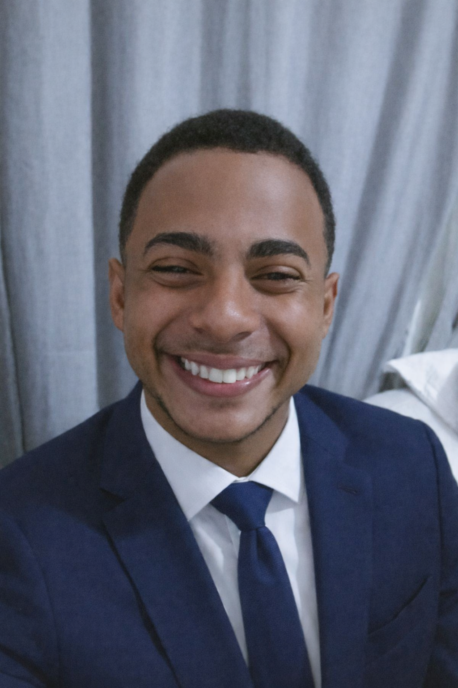

Desenvolvedor Front-end focado em interfaces funcionais, responsivas e bem estruturadas
Desenvolvedor front-end em evolução para nível júnior, com experiência prática em projetos reais, facilidade de aprendizado e foco em boas práticas.
Busco unir análise, design e desenvolvimento para construir soluções bem estruturadas, funcionais e com impacto real para usuários e empresas.
Tenho grande interesse em UI/UX, utilizando Figma para criação de protótipos e fluxos de interface, que servem como base para o desenvolvimento das aplicações.
Além do front-end, possuo experiência com bancos de dados como MySQL, PostgreSQL e soluções como Supabase, aplicadas em projetos pessoais e acadêmicos.
Paralelamente ao estágio atual, desenvolvo projetos próprios focados em práticas e demandas do mercado privado.
Escrevo código limpo, organizado e reutilizável, priorizando manutenção, clareza e escalabilidade.
Interfaces responsivas, portfólios, páginas institucionais e aplicações web com foco em usabilidade.
HTML, CSS, JavaScript, Figma, MySQL, PostgreSQL e Supabase.
Atuar como desenvolvedor front-end júnior, evoluindo constantemente e participando de projetos desafiadores.
Busco entender o problema a fundo antes de codar, propondo soluções simples, eficientes e bem pensadas.
Estudo constantemente novas tecnologias, boas práticas e tendências para evoluir como desenvolvedor.
Aberto a oportunidades como desenvolvedor front-end júnior.
Vamos conversarFormação que desenvolveu organização, visão de processos e responsabilidade profissional.
Formação técnica com foco em programação, fundamentos de sistemas e desenvolvimento de aplicações.
Graduação com foco em lógica, desenvolvimento web e estruturação de sistemas.
Atuação em ambiente institucional com sistemas internos, participando do desenvolvimento, manutenção e apoio a soluções técnicas.
Atuação com atendimento técnico, resolução de problemas, suporte a usuários e contato direto com demandas reais.